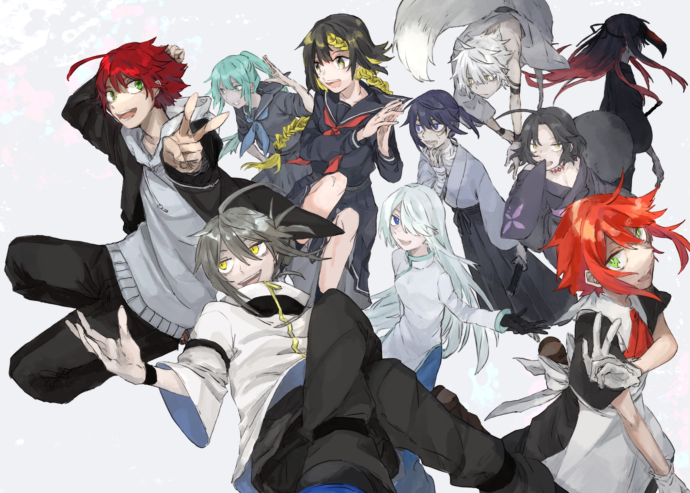

現実世界
妖怪、モンスター、妖精、ドラゴン、悪魔、魔術師、そして神。はるか昔からこの世界に存在し、人間と様々な関係を築いていた「人ならざるもの」は、人類の科学の発達と共に御伽噺の中だけの存在として片付けられた。
しかし、20XX年の世界を半壊させた異変を皮切りにそれらは再び力を取り戻し、22XX年現在に至るまで人類より優れた存在として世界に君臨している。
- 極東 -
東雲神社

いつの時代からか、とある山奥の小さな村で、土地神の「シノノメ様」を祀っている神社。御神体は「シノノメ様」をその身に宿す現人神が時折現れる一族であり、神様が本当にそこに居る神社。
202X年頃までは、村民以外では一部の学者や神が実在することを知っているような特殊な者にしかまともに存在を知られていなかったが、20XX年に■■■■った■■■■■て■■■■■■■■知られ■■■■る。22■■■現在は現人神として東雲アカネが■■■■■■■■■■■■■■■■■■■■■■■
22XX年現在は、東雲の人間として東雲アカリと東雲アカネの姉弟が存在しており、神社は東雲の姉弟と巫女一族の逆月イザヨイによって管理されている。この他神社の敷地内にある東雲家に居候としてフィルとスヴィという自称北欧出身の二人が住んでいる。
東雲アカネは逆月イザヨイを師とする退治師見習いであり、東雲家に代々受け継がれてきた使い魔の黒狸と白狐を従えている。
五大退治師一族
退治師とは、妖怪退治を生業とする者たちを指す。古くから妖怪と密接な日本では退治師を家業とする一族が一定数存在し、中でも力のある、最も歴史ある退治師として朝廷に仕えてきた天子家、江戸時代に幕府の「妖怪殺し」として名を馳せた鳳至家、とある山奥の村で 土地神として妖から人々を守る現人神の東雲家、東雲神社の巫女一族として東雲と共に妖怪退治を行う逆月家、鬼の末裔でありながら鬼退治を専門とする鬼塚家、の五家を五大退治師一族と呼ぶ。
また、とりわけ突出した才能のある天子、鳳至、東雲を指して三大退治師一族。才能のみならず、歴史と地位も兼ね備えている天子と鳳至のみを指して二大退治師一族と呼ぶこともある。
宝来
宝来一族は月に登ることを最終目的とする者たちの総称であり、都合上一族としているが血縁関係はあまり重要視されていない。曰く、始まりはかぐや姫の伝承に存在する不死の薬は実在し、飲めば月の一族の客人として月に登り莫大な力と富を得られる。という与太話を本気で信じた者たちによって作られた一族であるとされ、現在に至るまで月に登るための活動を続けている。
現在では月に登って何を為すかは宝来一族の中でも個人間でバラつきがあるが、月に登れば人智を超えた力が手に入るということは一族全ての者が信じている。また、月に登るための手段は選ばない者が多く、異常者の巣窟でもある。
御伽堂
日本における政府直属の歴史史料編纂組織の俗称のひとつであり、その原型となる組織の設立には古事記の編纂者の一人である稗田阿礼が関わっているともされる。長らく朝廷の一部とされ、朝廷が廃止された後も政府の一部として機能し続けていたが、二度目の大戦後に一度解体され、後に再編された。現在では公の史料研究、編纂については大学の附置研究所などに任せる形となっており、実質的にその補助などを行うのみの組織となっている。
というのがこの組織の表向きの顔。
極めて少人数の構成員から成り立っており、どの時代も「御伽名残」と名乗る存在に率いられている。その実態は、人間にとって最も望ましい歴史を作り、書き残す為の組織であり、望ましい歴史のためならどんなことでも行う。朝廷の一部であったと認識されているが、歴史を編纂するには権力者の元である方が都合が良いというだけであり、厳密にはどこにも所属していない。朝廷の一部として誤認されているのは江戸の幕府に認められなかった為江戸時代の間は朝廷の元にあったためである。
しかし戦後の圧力で一度解体再編されてからは、完全に政府の一部として組み込まれてしまい、政府に都合がいいように扱われるようになっていったせいで最終的に構成員が離反し、1970年頃から2000年代初頭までは形だけの組織となっていた。200X年の「■■地域における神霊消失事件」以降は烏光佐依によって一度組織が立て直されたが組織内で歴史編纂は行なわず、歴史編纂については御伽名残が個人として編纂作業を行っているとされる。
- 欧州 -
魔術師団
ミズガルズ魔術師団。
「首なしミミル」が設立した魔術を極める為の組織。かつては数少ない魔術師達が気兼ねなく魔術の追求を行えるひっそりとした組織だったが、20XX年の異変を機に神話の世界の再現が行われるようになった北欧地域で、人間の活動拠点を維持する自治組織としての側面も備えるようになった。24+1の位階によって上下関係の決定を行っている。
22XX年時点の位階(一部)
位階1位 神階 首なしミミル
位階2位 師団長 ラヴィーニ・オルティヌス 『白雪魔王』
位階3位 □□□・アルヴ・ユグドラシル 『生命の権威』
位階4位 擬似堕天使 No.969 フォールアウト
位階5位 魔導商人「Ms.ウィッチ」 『典型的な魔女』
位階8位 スティア・リシェクタ 『才人』
位階12位 吸血主第一継承者 リッチ
位階24位 テュール 『戦神』
位階空位 フィルヴィズ 『黒炎』
聖主神教
歴史ある宗教であり、この世界の理ともされる唯一絶対の『主』を信仰している一神教。西欧を拠点に布教活動を含め世界中で様々な活動を行っている。
20XX年の異変時に天使が現れたことにより、西欧にある本拠地付近は全く被害を受けることなく存続しており、以降は救世を謳い悪しき人外の完全排除を目標としている。
- 北米 -
????
これはすでに存在しない亡国であり、屍たちの楽園である。
- 過去 -
繧ｨ繝ｩ繝ｼ

この世界に魔王サタンは存在しない。
かつて最も『主』に近かった堕天使は、地獄を統べる道から外れた。決して存在してはならない致命的なバグになった堕天使ルシファーは、同じくイレギュラーである予言を逃れラグナロクの後も生き続けている北欧の主神オーディンと手を組み、成し得なかった天への反逆を再び企てる。そして己を地獄の魔王にまで堕とそうとする主に抗い、理から逃げ切り己の目的を達成するため、理に縛られない月から舞い降りた姫と彼女の残した異物を巡った騒動へ身を投じていく。
極東:平安初期
飛鳥の頃にかぐやと呼ばれた月から降り立った女にもたらされた不死の霊薬。地上では決して作り出せないその薬は当時の帝に燃やされ失われた。時を経てその存在も怪しまれるようになって久しい中、不死の霊薬が富士の山で見つかったという噂が都に流れ始める。皇室、天子の筆頭退治師代理、讃岐造の子孫を名乗る者、かぐやの伝説を追い求める藤原家の青年、自称九天魔王、そして黒翼の少女。多くの者がそれぞれの思惑の元不死の霊薬を追い求める。